HTML CreatorTEGOROCZNĄ KONFERENCJĘ POPRZEDZAJĄ WARSZTATY
DLA LEKARZY WETERYNARII, STUDENTÓW ORAZ TEGOROCZNYCH ABSOLWENTÓW
ODBYWAJĄCE SIĘ W KLINICE EQUI VET SERWIS W BUKU.
5 listopada 2026
Tegoroczna edycja konferencji będzie wyjątkową okazją do pogłębionej dyskusji nie tylko nad wyzwaniami diagnostyki obrazowej i ortopedii koni, ale również nad kluczowymi aspektami funkcjonowania środowiska weterynaryjnego. Wspólnie z ekspertami –podejmiemy temat polityki cenowej dotyczącej usług weterynaryjnych oraz konieczności wypracowania rekomendowanych widełek cenowych dla podstawowych usług w hipiatrii. Istotnym elementem konferencji będzie szeroko pojęte zarządzanie praktyką weterynaryjną oraz porozmawiamy o odpowiedzialności prawnej lekarza weterynarii w kontekście przeprowadzanego badania przedzakupowego konia (PPE).
Do zobaczenia w listopadzie!
9:30 – Otwarcie i omówienie zasad organizacyjnych
10:00 – Start sesji praktycznych
13:00 - 13:30 – PRZERWA KAWOWA
17:30 - 18:00 – Zakończenie warsztatów
7 grup (8 lekarzy weterynarii + 1 student)
Rotacja przez 7 stacji
50 minut na każdą grupę
10 minut przerwy między stacjami (organizacja stanowisk, zmiana koni)
Stacje warsztatowe:
1. Johan Lenz – Praktyczne badanie neurologiczne konia
2. Aagje Hardeman – SLEIP u zdrowego konia
3. Filipe Serra Bragança – SLEIP u konia z kulawizną
4. Mahmoud Mageed – Ocena zdjęć szyi i grzbietu z przypadków badania kupno–sprzedaż
5. Brenda Hoogelander – Badanie szyi i grzbietu za pomocą USG
6. Maciej Kozubik – Określanie cen usług weterynaryjnych
7. Katharina Thieme – Badanie oka przy transakcjach kupno–sprzedaż
8:00 - 9:00 – REJESTRACJA UCZESTNIKÓW
9:00 - 9:30 – OTWARCIE KONFERENCJI
9:30 - 10:30 – Techniczna doskonałość: Perfekcyjne projekcje i kontrola ich jakości z międzynarodowej perspektywy.
Johan Lenz
10:30 - 11:30 – Synergia w tkankach miękkich: Integracja badania USG w proces badania kupno-sprzedaż - obwodowa część kończyny konia.
Brenda Hoogelander
11:30 - 12:10 – PRZERWA KAWOWA
12:10 - 13:10 – Zarządzanie usługami weterynaryjnymi, część I.
Maciej Kozubik
13:10 - 14:10 – Dylematy związane z dystalnym odcinkiem kończyny konia – „szare strefy” kopyta i pęciny. Kiedy zmienić RTG na CT/MRI?
Mahmoud Mageed
14:10 - 15:00 – PRZERWA OBIADOWA
15:00 - 16:00 – Obiektywna analiza ruchu: Wyjście poza „gołe oko”.
Aagje Hardemann & Filippe Serra Bragança
16:00 - 17:00 – Zarządzanie usługami weterynaryjnymi, część II.
Maciej Kozubik
16:30 - 17:00 – PRZERWA KAWOWA
17:00 - 18:00 – PANEL DYSKUSYJNY
- Obiektywna analiza ruchu podczas badania kupno-sprzedaż.
Aagje Hardemann & Filippe Serra Bragança
- Interaktywny quiz radiologiczny – Kahoot!
Mahmoud Mageed, Brenda Hoogelander, Johan Lenz
18:00-20:00 – SPA TIME
20:00 - 24:00 – PARTY TIME
9:25 - 9:30 – OTWARCIE II DNIA KONFERENCJI
9:30 - 10:30 – Badanie USG proksymalnego odcinka kończyny łącznie z miednicą i stawem krzyżowo-biodrowym.
Brenda Hoogelander
10:30 - 11:30 – Szkielet osiowy: Interpretacja zmian radiologicznych odcinka szyjnego i piersiowego.
Mahmoud Mageed
11:30 - 12:10 – PRZERWA KAWOWA
12:10 - 13:10 – Badanie PPE – ochrona przed pułapkami prawnymi z perspektywy Praktyki.
Johan Lenz
13:10 - 14:10 – Różnicowanie oftalmologicznych zmian progresywnych i incydentalnych z perspektywy badania kupno – sprzedaż.
Katharina Thieme
14:10 - 15:00 – PRZERWA OBIADOWA
15:00 - 16:00 – Odpowiedzialność prawna lekarzy weterynarii podczas badania kupno-sprzedaż. Jak profesjonalnie i bez ryzyka przeprowadzić proces badania?
Karolina Służewska-Woźnicka & Johan Lenz
16:00 - 17:30 – PANEL DYSKUSYJNY, PREZENTACJA PRZYPADKÓW – KAHOOT!
Brenda Hoogelander, Mahmoud Mageed, Johan Lenz, Katharina Thieme
17:30 - 18:00 – ZAMKNIĘCIE KONFERENCJI
19:00 - 24:00 – POZNAŃ BY NIGHT
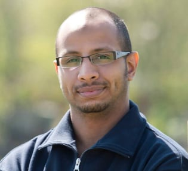
Dr Mahmoud Mageed jest lekarzem weterynarii specjalizującym się w diagnostyce obrazowej koni. Tytuł zawodowy lekarza weterynarii uzyskał na Uniwersytecie w Chartum (Sudan), a doktorat z zakresu nauk weterynaryjnych obronił na Uniwersytecie w Lipsku, w Niemczech. Od 2019 roku jest specjalistą w dziedzinie weterynaryjnej diagnostyki obrazowej.
W swojej karierze zawodowej dr Mageed zdobył bogate doświadczenie, pracując jako główny radiolog weterynaryjny w prywatnej klinice dla koni w Niemczech, pracował również w Klinice dla Koni Uniwersytetu w Lipsku, a obecnie pełni funkcję teleradiologa w EquiPixel Veterinary Teleradiology. Jego specjalistyczna wiedza skupia się na zaawansowanych technikach obrazowania, takich jak tomografia komputerowa i rezonans magnetyczny. Prowadzi on również szkolenia dla lekarzy weterynarii i techników.
Dr Mageed włada biegle trzema językami: arabskim, angielskim i niemieckim. Posiada także kwalifikacje z zakresu obsługi urządzeń MRI i CT, ochrony przed promieniowaniem i jest oficjalnym lekarzem weterynarii FEI. Jego wkład w badania naukowe jest znaczący i obejmuje liczne recenzowane artykuły oraz uczestnictwo w konferencjach międzynarodowych. Jest również aktywnym członkiem kilku organizacji zawodowych w dziedzinie radiologii weterynaryjnej.
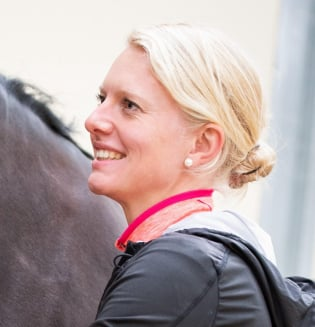
Dr Aagje Hardeman ukończyła studia na kierunku medycyna weterynaryjna na Uniwersytecie w Utrechcie w 2012 roku, uzyskując tytuł lekarza weterynarii. Następnie ukończyła prestiżowy program BackBone Academy w Niemczech, zdobywając kwalifikacje certyfikowanego chiropraktyka koni.
W 2014 roku przeprowadziła się do Niemiec, gdzie rozpoczęła pracę w Tierklinik Lüsche – jednym z największych szpitali dla koni w Europie. Od tego czasu jest członkiem zespołu ortopedii i rehabilitacji koni.
Równolegle realizowała studia doktoranckie pod kierunkiem prof. René van Weerena (Uniwersytet w Utrechcie) oraz prof. Larsa Roepstorffa (Szwedzki Uniwersytet Nauk Rolniczych – SLU w Uppsali). Jej rozprawa doktorska, zatytułowana „Large Scale Clinical Application of Quantitative Gait Analysis in Horses”, poświęcona była szerokiemu zastosowaniu ilościowej analizy chodu koni w praktyce klinicznej.
Jest założycielką DataHorse oraz współzałożycielką EGAS (Equine Gait Analysis Society). Obecnie, poza działalnością naukową i kliniczną, współpracuje z firmą Sleip, gdzie wspiera lekarzy weterynarii w zakresie gromadzenia, analizy i interpretacji danych dotyczących analizy ruchu koni z wykorzystaniem nowoczesnych technologii.
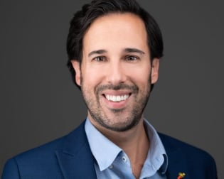
Dr Filipe Manuel Serra Bragança ukończył studia z zakresu medycyny weterynaryjnej na Uniwersytecie Lizbońskim w Portugalii w 2013 roku. Po uzyskaniu dyplomu odbył staż w praktyce specjalizującej się w medycynie koni w Wielkiej Brytanii.
W 2014 roku rozpoczął studia doktoranckie na Uniwersytecie w Utrechcie (Holandia), prowadząc badania naukowe z zakresu biomechaniki ruchu koni. Głównym obszarem jego zainteresowań jest obiektywna analiza ruchu koni z wykorzystaniem nowoczesnych metod ilościowej oceny chodu.
Jest współzałożycielem EGAS (Equine Gait Analysis Society) – międzynarodowego stowarzyszenia promującego rozwój i standaryzację obiektywnej analizy ruchu koni. Równocześnie współpracuje z firmą Sleip, gdzie jako biomechanik i badacz wspiera lekarzy weterynarii w interpretacji danych z zakresu analizy chodu oraz rozwijaniu praktycznych zastosowań nowoczesnych technologii w diagnostyce ortopedycznej koni.
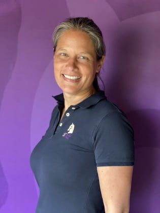
Brenda Hoogelander ukończyła studia na Wydziale Medycyny Weterynaryjnej Uniwersytetu w Utrechcie w 2002 roku. Już podczas studiów odbywała staże kliniczne w Niemczech, Stanach Zjednoczonych i Republice Południowej Afryki. Poświęciła swoją karierę ortopedii koni, diagnostyce kulawizn oraz badaniom PPE.
Od 2006 roku była związana z Diergeneeskundig Centrum Oisterwijk, gdzie została współwłaścicielką kliniki. Od 2016 roku pracuje w SMDC jako specjalistka ortopedii koni, a od 2019 roku pełni funkcję Managing Director.
Dr Hoogelander ukończyła program ISELP, posiada certyfikat FES w zakresie chiropraktyki, ukończyła szkolenie Focus on the Equine Spine oraz jest certyfikowanym przez NVVP lekarzem stomatologii koni.
W latach 2009–2019 była lekarzem weterynarii reprezentacji Holandii (TeamNL), uczestnicząc m.in. w mistrzostwach Europy, Światowych Igrzyskach Jeździeckich oraz igrzyskach paraolimpijskich. Podczas Igrzysk Olimpijskich w Tokio i Paryżu odpowiadała za ortopedyczne badania i diagnostykę obrazową koni sportowych. Regularnie wykłada na międzynarodowych kongresach, a jako Program Director Altano Academy odpowiada za edukację w zakresie medycyny sportowej i rehabilitacji koni.
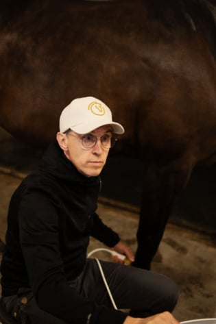
Ukończył studia weterynaryjne na Uniwersytecie w Kopenhadze w 2006 roku. Następnie przez dziewięć lat pracował w Equine Hospital in Helsingborg, zdobywając szerokie doświadczenie kliniczne w medycynie koni.
Kolejnym etapem jego kariery była współpraca z dr. Jonasem Törnell’em, który przez 20 lat pełnił funkcję lekarza weterynarii szwedzkiej kadry narodowej w ujeżdżeniu i skokach przez przeszkody. Po pięciu latach wspólnej pracy z dr. Törnell’em założył wraz z żoną własną praktykę. Obecnie prowadzą wyspecjalizowaną praktykę hipiatryczną na południu Szwecji, w okolicach Helsingborga, koncentrującą się na diagnostyce koni sportowych.
W latach 2012–2016 pełnił funkcję asystenta lekarza weterynarii szwedzkiej kadry narodowej w ujeżdżeniu i skokach przez przeszkody. Od marca 2025 roku jest lekarzem weterynarii szwedzkiej kadry narodowej w ujeżdżeniu.
Od wielu lat jest ściśle związany ze sportem jeździeckim. Przed rozpoczęciem studiów weterynaryjnych przez sześć lat pracował jako kierownik stajni oraz jeździec w międzynarodowo uznanej stajni ujeżdżeniowej. Przez 16 lat pełnił również funkcję dyrektora sportowego ds. ujeżdżenia podczas Falsterbo Horse Show. Nadal regularnie jeździ konno, starając się trenować co najmniej trzy razy w tygodniu.
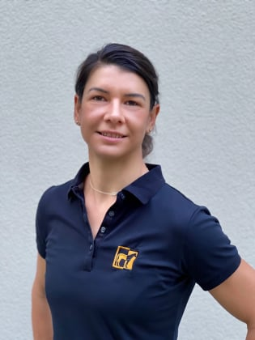
Dr Thieme ukończyła studia na kierunku medycyna weterynaryjna na Uniwersytecie w Berlinie. Po uzyskaniu dyplomu zdobywała doświadczenie zawodowe, pracując najpierw w klinice specjalizującej się w leczeniu koni, a następnie w praktyce mieszanej, obejmującej zarówno konie, jak i małe zwierzęta. Już na początku swojej kariery zawodowej zainteresowała się okulistyką weterynaryjną, uzyskując certyfikat General Practitioner Certificate in Ophthalmology (GPCert Ophthal).
W 2017 roku dołączyła do zespołu prof. Eule na Uniwersytecie w Berlinie, gdzie odbyła rezydenturę z okulistyki weterynaryjnej. W 2025 roku uzyskała tytuł Diplomate of the European College of Veterinary Ophthalmologists (ECVO) – najwyższe europejskie wyróżnienie specjalizacyjne w dziedzinie okulistyki weterynaryjnej. Jest również posiadaczką niemieckiego tytułu specjalisty z okulistyki weterynaryjnej (Zusatzbezeichnung Augenheilkunde).
Od 2017 roku kieruje Centrum Okulistyki w Seeburg Equine Clinic, gdzie zajmuje się diagnostyką i leczeniem chorób oczu u koni. Szczególnym obszarem jej zainteresowań są nowoczesne metody diagnostyki oraz leczenia schorzeń okulistycznych u koni, a także rozwój specjalistycznej okulistyki weterynaryjnej.
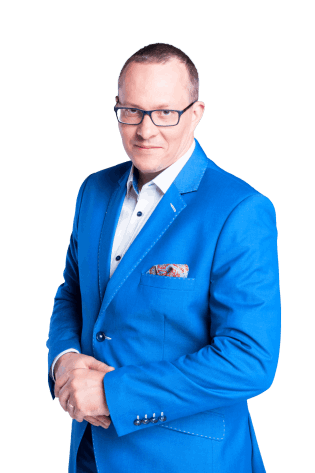
Maciej Kozubik jest trenerem biznesu, coachem, mentorem i przedsiębiorcą z ponad 25-letnim doświadczeniem w sprzedaży oraz blisko dwudziestoletnią praktyką w rozwoju kompetencji menedżerskich i handlowych. Od wielu lat wspiera właścicieli firm, menedżerów oraz zespoły sprzedażowe w budowaniu skutecznych strategii biznesowych, zwiększaniu efektywności sprzedaży i rozwijaniu kompetencji przywódczych.
Jest założycielem i właścicielem Grupy Kozubik i Partnerzy, certyfikowanym konsultantem DISC D3+BAI oraz trenerem standardu HRD BP – Szkolenia Efektywne Biznesowo. Specjalizuje się w projektowaniu i wdrażaniu programów rozwojowych opartych na mierzalnych efektach biznesowych, obejmujących m.in. sprzedaż, negocjacje, komunikację, zarządzanie zespołem, budowanie autorytetu lidera oraz rozwój przedsiębiorczości.
W swojej karierze zrealizował setki projektów szkoleniowych i coachingowych dla przedsiębiorstw, instytucji oraz organizacji z różnych sektorów gospodarki. Współpracował z kadrą menedżerską, przedsiębiorcami, handlowcami, sportowcami oraz przedstawicielami sektora finansowego. Jest autorem książki „52 pomysły jak zwiększyć sprzedaż. Praktyczny przewodnik dla małych i średnich firm” oraz współautorem publikacji „Start w coachingu. Porady doświadczonych coachów”.
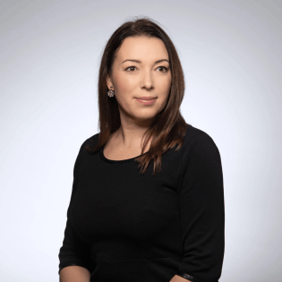
Członek Wielkopolskiej Izby Adwokackiej w Poznaniu od 2003 roku, wykładowca szkoleń dla aplikantów adwokackich Wielkopolskiej Izby Adwokackiej w Poznaniu z zakresu prawa cywilnego, rodzinnego, pracy oraz postępowania cywilnego , Sędzia Sądu Dyscyplinarnego Izby Adwokackiej w Poznaniu, wykładowca przedmiotów prawniczych Uniwersytetu SWPS, właściciel Kancelarii KSW.
• prowadzi oraz koordynuje skomplikowane i wielowątkowe postępowania sądowe dotyczące prawa cywilnego, rodzinnego, gospodarczego, prawa medycznego oraz prawa karnego związanego z wszelkimi aspektami prowadzonej działalności gospodarczej;
• specjalista z zakresu prawa medycznego oraz weterynaryjnego – bieżąca obsługa medycznych towarzystw naukowych, podmiotów leczniczych oraz lekarzy w postępowaniach cywilnych przed sądami powszechnymi, dyscyplinarnych przed organami samorządu zawodowego oraz postępowaniach karnych o błąd w sztuce lekarskiej;
• autor wielu opinii oraz publikacji w zakresie prawa medycznego i prawa cywilnego;
• prelegent na licznych konferencjach i sympozjach naukowych poświęconych zagadnieniom prawa medycznego oraz prawa weterynaryjnego.
W ramach opłaty konferencyjnej Uczestnikom przysługuje: udział w konferencji, materiały konferencyjne,
certyfikat uczestnictwa, lunch oraz przerwy kawowe.
800 PLN*
1000 PLN**
*wpłata do 5.10.2026
**wpłata od 6.10.2026
1500 PLN*
1800 PLN**
*wpłata do 5.10.2026
**wpłata od 6.10.2026
1800 PLN*
2100 PLN**
*wpłata do 5.10.2026
**wpłata od 6.10.2026
1800 PLN*
2100 PLN**
*wpłata do 5.10.2026
**wpłata od 6.10.2026
1000 PLN
liczy się kolejność wpłat
Polskie Towarzystwo Hipiatryczne
ul. Nowoursynowska 159c, 02-776 Warszawa
IBAN: PL 15 1090 1870 0000 0005 0400 1077
SWIFT/BIC code: WBKPPLPP
Bank Zachodni WBK S.A. 8 w Warszawie, pl. Zbawiciela 2
przelewem w terminie 3 dni roboczych od daty zgłoszenia
W tytule przelewu proszę wpisać „Opłata konferencyjna PTH" oraz podać imię i nazwisko uczestnika konferencji.
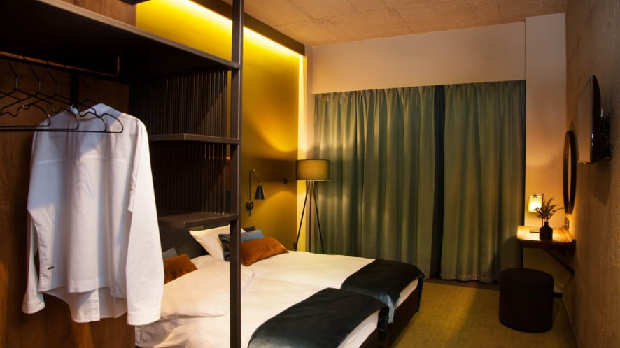
KONTAKT:
Recepcja, rezerwacje indywidualne:
info@hotelremes.pl
+48 61 44 82 400, +48 502 596 907
W celu założenia rezerwacji proszę o wysłanie e-mail na adres info@hotelremes.pl, który powinien zawierać następujące dane:
imię i nazwisko gościa, dane firmy z numerem NIP oraz datę pobytu i rodzaj pokoju (jedno- lub dwuosobowy)
W odpowiedzi gość otrzyma potwierdzenie rezerwacji oraz FV pro forma do wpłaty zaliczki w wysokości 30% wartości rezerwacji.
Nie ma możliwości bezkosztowej zmiany czy anulacji rezerwacji.
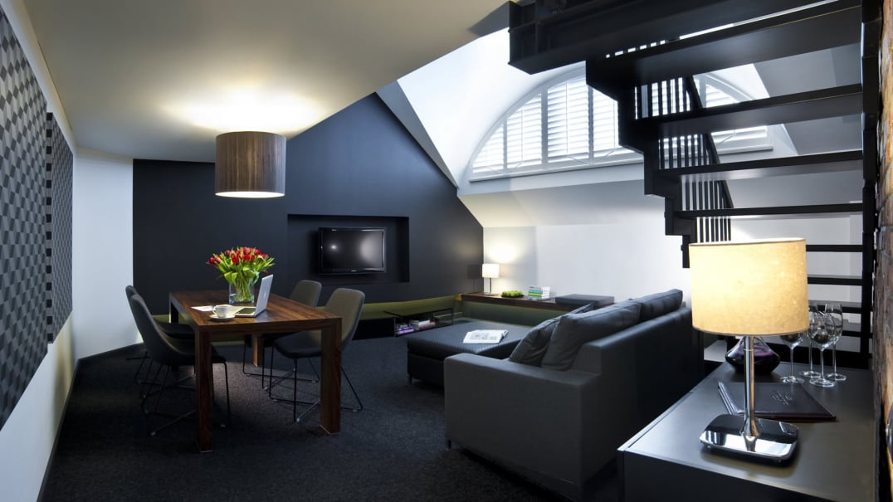
Pokoje 1 os.
Standard ze śniadaniem
CENA 430 zł
Pokoje 2 os.
Standard ze śniadaniem
CENA 480 zł
NA TERENIE HOTELU DOSTĘPNY JEST DARMOWY PARKING
Cena pokoju obejmuje:
– śniadanie w formie szwedzkiego stołu.
– możliwość korzystania ze SPA: basenu, sauny suchej, sauny parowej, jacuzzi, siłowni.
– bezpłatny wstęp do hotelowego Clubu, gdzie znajdują się (dodatkowo płatne) 2 tory bowlingowe, bilard, piłkarzyki.
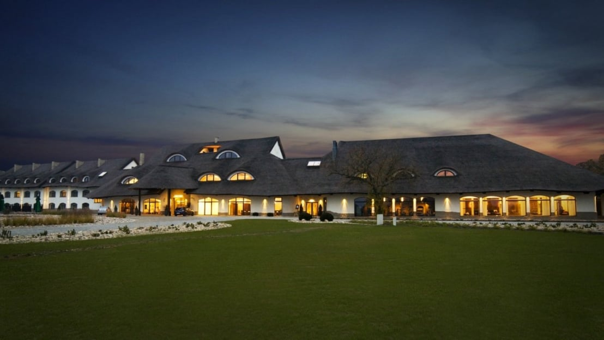
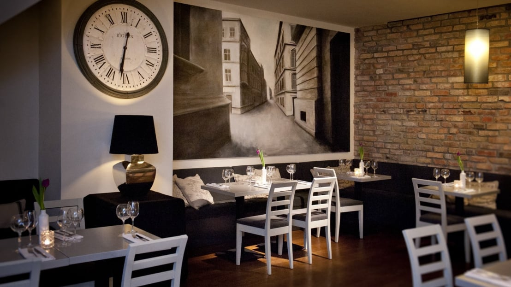
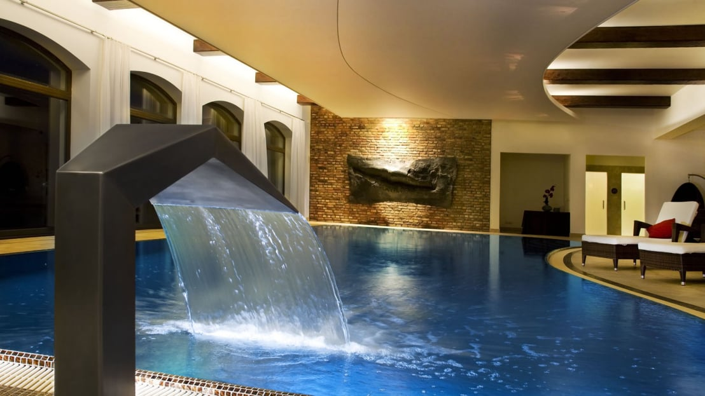
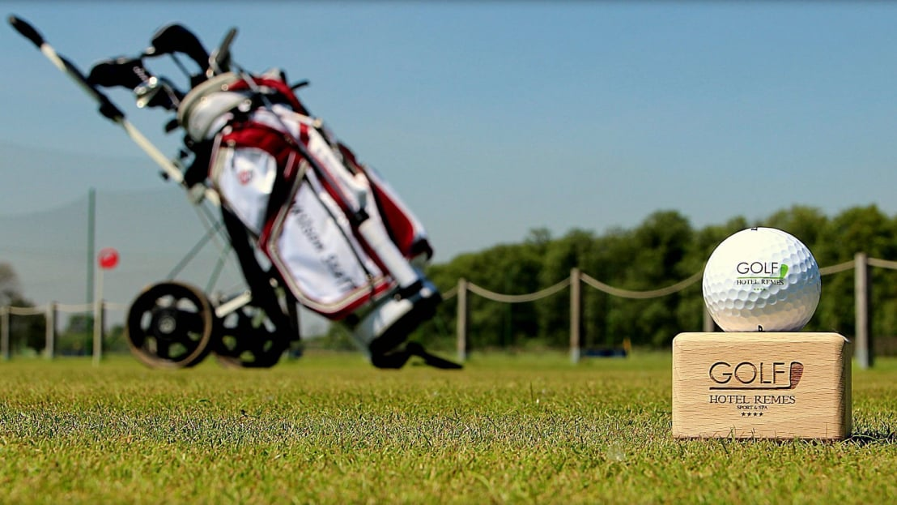
dr Maciej Przewoźny
+48 600 855 362
m.przewozny@klinika-konie.com.pl
lek. wet. Magdalena Podsobińska
+48 608 170 250
magdalena.podsobinska@gmail.com
HTML Creator